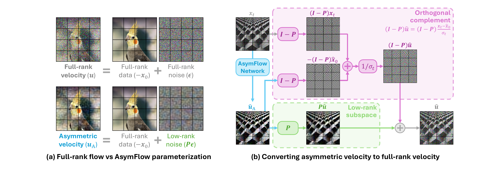
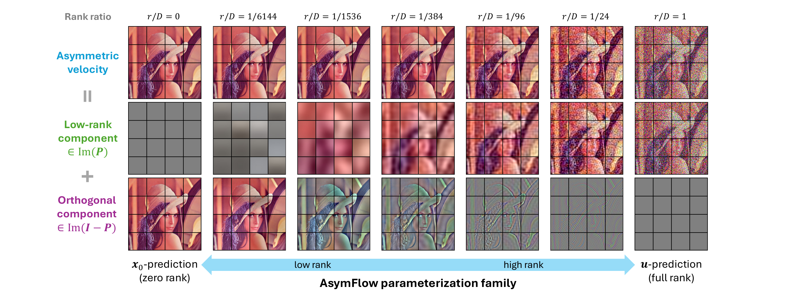
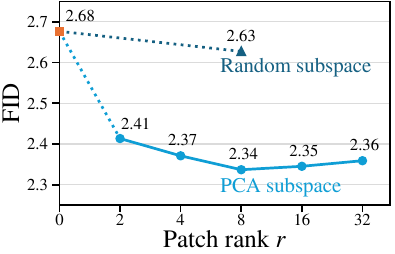
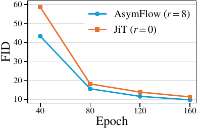
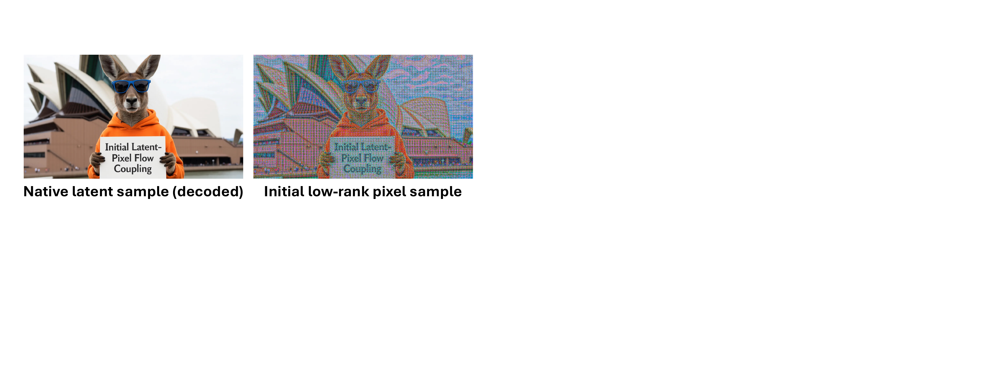
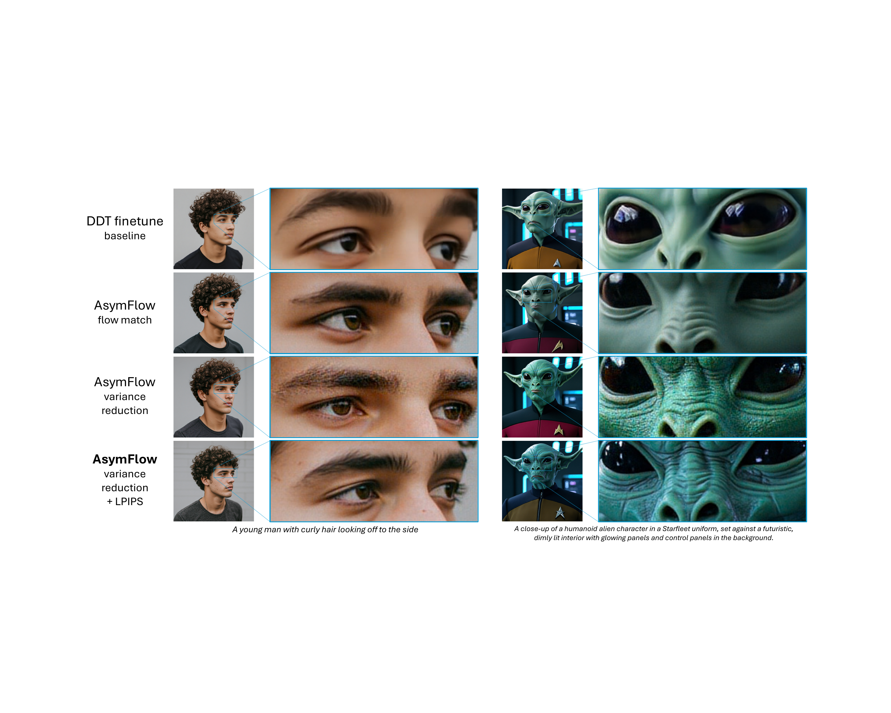

An interactive explainer
Asymmetric Flow Models
Modern flow models live in compressed latent spaces because they have to. Move them to pixels and the velocity target — full of high-dimensional Gaussian noise — chokes the network. AsymFlow's fix is one line: keep the data part of the target full-dimensional, but project the noise part to a low-rank subspace. The full-rank velocity comes back analytically. The result on ImageNet 256: FID 1.57, the best practical pixel diffusion model, with no architectural surgery. Bonus: the same trick lets you finetune a pretrained latent FLUX into a pixel-space text-to-image model that beats its own teacher.
Almost every state-of-the-art image generator today is a flow model in a latent space. The pipeline is: an autoencoder squashes pixels into 16- or 32-channel tokens; a flow transformer learns to move noise to those tokens; the decoder unsquashes the tokens back to pixels. The compression is what makes everything tractable. A 1024×1024 image becomes a small token grid that a plain transformer can actually predict velocities for.
The cost of that pipeline is fine detail. The generator can never reach below the decoder's resolution; texture, geometry, sub-pixel structure — those live in the autoencoder, frozen, out of reach. Trying to generate pixels directly would fix this, but every honest attempt has hit the same wall: the flow-matching target $\vu = \bm{\epsilon} - \vx_0$ contains a high-dimensional noise term, and plain transformers can't predict it without choking. So the field has either added architectural escape hatches (skip connections, decoder heads), or just dropped the noise term entirely and predicted clean data $\vx_0$.
AsymFlow says: don't drop the noise. Compress it. Project $\bm{\epsilon}$ onto a low-rank subspace before asking the network to predict it. The data part stays full-rank. The asymmetric target $\vu_A = \mathbf{P}\bm{\epsilon} - \vx_0$ is much friendlier to a plain transformer, and the full velocity can be recovered analytically with three lines of algebra. Training is unchanged. Sampling is unchanged. The only thing that changes is the target the network is asked to fit.
The result is striking. With the same JiT-H/16 backbone (953M params) as the previous best $\vx_0$-prediction baseline, AsymFlow reaches 1.76 FID; with a standard REPA loss on top, 1.57. Even more telling: when applied to a 9B FLUX.2 klein latent model, the same trick turns it into a pixel-space text-to-image generator that beats its latent teacher on human preference benchmarks.
1. Flow matching, in one box
To make sense of what AsymFlow changes, we need one shared picture of flow matching. Skip this section if you already have it; it'll take 60 seconds.
You have data points $\vx_0 \in \mathbb{R}^D$ and Gaussian noise $\bm{\epsilon} \sim \mathcal{N}(0, \mathbf{I})$. At every diffusion time $t \in (0, 1]$, mix them linearly:
$$ \vx_t \coloneqq (1 - t)\,\vx_0 + t\,\bm{\epsilon}. $$
At $t = 0$ you're at the data; at $t = 1$ you're at pure noise. Differentiating gives the velocity of this straight-line interpolation:
$$ \vu \coloneqq \frac{d\vx_t}{dt} = \bm{\epsilon} - \vx_0. $$
A flow model is a network $\hat{\vu} = G_\theta(\vx_t, t)$ trained to predict this velocity. The loss is just MSE between the predicted velocity and the true velocity:
$$ \mathcal{L}_\mathrm{FM} = \mathbb{E}_{t,\vx_0,\bm{\epsilon}}\,\big\| \vu - \hat{\vu}\,\big\|^2. $$
At sampling time you flip the script: start at $t = 1$ with pure noise, integrate $\vx_{t-\Delta t} = \vx_t - \Delta t \cdot \hat{\vu}(\vx_t, t)$ down to $t = 0$, and the network's predicted velocities walk noise back to a clean sample. That's the whole game.
2. The high-dimensional bottleneck
Here is the problem that AsymFlow exists to solve. In latent space, each token has maybe $d = 16$ channels. The noise $\bm{\epsilon}$ that the network must predict is 16-dimensional. The network's internal feature width is, say, 1280. There's plenty of room for the noise to flow through the features without disturbing anything.
In pixel space, each $16 \times 16$ patch is $16 \cdot 16 \cdot 3 = 768$-dimensional. The Gaussian noise the network must extract from the input and pass to the output is 768-dimensional. The plain transformer doesn't have skip connections — the only way for the noise to reach the output is through the network's features. So 768 dimensions of i.i.d. noise have to live in the hidden states. They drown the meaningful signal. Image quality collapses.
What have people tried?
- Add architectural bypasses. U-Net skip connections (ADM, DDPM), U-ViT-style hierarchies (SiD2, EPG-G), or decoder heads (PixelDiT, PixNerd, DeCo, DiP). All of these route the noisy input directly to the output, sidestepping the bottleneck. They work, but they break the plain-transformer recipe that scales so well in latent models.
- Predict clean data $\vx_0$ instead. JiT, PixelGen, and PixelREPA all do this. The network never sees $\bm{\epsilon}$ as a target, so the bottleneck disappears. The cost: at low noise levels ($t \to 0$), recovering velocity via $(\vx_t - \hat{\vx}_0)/t$ divides by a tiny $t$, blowing up tiny prediction errors. JiT has to clamp $t$ at $\sigma_\mathrm{min} = 0.04$ to stay numerically stable. And $\vx_0$-prediction is mysteriously incompatible with REPA-style representation alignment, leaving free quality on the table.
Both fixes are real. Neither is satisfying. The first complicates the architecture. The second complicates the loss. AsymFlow asks: is there a third way that keeps the plain transformer and keeps velocity prediction?
3. The asymmetric target
Look at the velocity target one more time:
$$ \vu = \bm{\epsilon} - \vx_0. $$
It has two pieces. A data piece $-\vx_0$, which is highly structured — real images live on a tiny manifold of natural-looking patches. And a noise piece $\bm{\epsilon}$, which is maximally unstructured — i.i.d. Gaussian, isotropic, full-rank.
That asymmetry is the whole opportunity. Why are we asking the network to predict the noise piece at the same fidelity as the data piece? The data is what we want; the noise is just a bookkeeping term that came along for the ride.
AsymFlow's move: pick a low-rank orthogonal projector $\mathbf{P} = \mathbf{A}\mathbf{A}^\top$, where $\mathbf{A} \in \mathbb{R}^{D \times r}$ is the basis of an $r$-dimensional subspace. Define the asymmetric velocity target:
$$ \boxed{\;\vu_A \coloneqq \mathbf{P}\bm{\epsilon} - \vx_0\;} $$
The data term is untouched. The noise term has been compressed: instead of asking the network to reproduce all 768 dimensions of $\bm{\epsilon}$, we ask it to reproduce only the $r$ dimensions that lie in the chosen subspace. The orthogonal complement of the noise — $(\mathbf{I} - \mathbf{P})\bm{\epsilon}$ — is just discarded from the target.

The picture matters. Standard velocity targets fill space — they can point anywhere because $\bm{\epsilon}$ is isotropic. The asymmetric target lives on a much smaller manifold: the union of the low-rank subspace (where $\mathbf{P}\bm{\epsilon}$ lives) and the direction $-\vx_0$ (which is structured by the data manifold). It is a vastly more predictable function of the input.
The central move. Left: standard flow matching asks the network to predict velocity arrows that fan out wildly because $\bm{\epsilon}$ is full-rank noise. Right: AsymFlow projects $\bm{\epsilon}$ onto a low-rank subspace; the arrows now collapse onto a 1-D slice next to the data manifold. Same information about the data direction — far less about the noise.
4. Two parameterizations, one slider
Once you write $\vu_A = \mathbf{P}\bm{\epsilon} - \vx_0$ as the target, something elegant happens. Split it along the subspace and its orthogonal complement:
$$ \mathbf{P}\,\vu_A = \mathbf{P}\bm{\epsilon} - \mathbf{P}\vx_0 = \mathbf{P}\vu, \qquad (\mathbf{I} - \mathbf{P})\,\vu_A = -(\mathbf{I} - \mathbf{P})\vx_0. $$
In words: AsymFlow behaves like $\vu$-prediction inside the subspace, and like $\vx_0$-prediction outside it. The two failure modes we saw — full-rank noise (bad in pixels) and ill-conditioned $\vx_0$-to-$\vu$ conversion (bad at low $t$) — show up only in their natural habitats. Inside the low-rank subspace, where noise prediction is cheap and meaningful, AsymFlow uses velocity. Outside, where the noise would dominate, it uses clean data.
This means $\vu_A$ is not a new exotic target — it is a knob that interpolates between two well-known ones. The rank $r$ is the knob's setting:
- $r = 0$: $\mathbf{P} = \mathbf{0}$ and $\vu_A = -\vx_0$. This is pure $\vx_0$-prediction (up to a sign).
- $r = D$: $\mathbf{P} = \mathbf{I}$ and $\vu_A = \bm{\epsilon} - \vx_0 = \vu$. This is pure $\vu$-prediction.
- $0 < r < D$: a genuine middle path. Velocity-style prediction in the meaningful directions, $\vx_0$-style in the rest.
The paper shows that the optimum is around $r = 8$ for a 768-dimensional patch — about 1% of the patch dimensions carry essentially all of the relevant noise variance, and that's all the network needs to predict.

5. Recovering the full velocity
A reasonable worry: if the network is only predicting $\vu_A$ — which lacks the orthogonal noise component — won't sampling be wrong? We're trying to integrate $d\vx/dt = \vu$, not $\vu_A$.
Here is the small piece of algebra that makes everything work. Inside the subspace, $\vu_A$ is $\vu$ — the in-subspace velocity equals $\mathbf{P}\vu = \mathbf{P}\bm{\epsilon} - \mathbf{P}\vx_0$, which is exactly what $\mathbf{P}\vu_A$ gives. Outside the subspace, $\vu_A$ gives us $-(\mathbf{I} - \mathbf{P})\vx_0$, which is the $\vx_0$-prediction's data part. We can convert that back to velocity using the standard relation $\vu = (\vx_t - \vx_0)/t$ applied componentwise:
$$ \vu \;=\; \underbrace{\mathbf{P}\,\vu_A}_{\text{keep as-is}} \;+\; \underbrace{(\mathbf{I} - \mathbf{P})\,\frac{\vx_t + \vu_A}{t}}_{\text{convert via }\vx_0\text{-to-}\vu}. $$
Three observations to make this feel less like a magic trick:
- It's just bookkeeping. The conversion uses no learned parameters. It's pure algebra on the projector $\mathbf{P}$ and the noisy input $\vx_t$.
- The numerical ill-conditioning is now small. The $1/t$ blowup that bedevils $\vx_0$-prediction only happens in the orthogonal complement now — a $(D - r)$-dimensional space whose contribution to the final image is, by construction, the low-variance part. Empirically, the paper shows AsymFlow loses only 0.52 FID when you remove the $\sigma_\mathrm{min}$ clamp entirely, while JiT loses 1.37. The conversion is much more stable.
- Training and sampling are unchanged. You convert $\hat{\vu}_A \to \hat{\vu}$ inside the loss, and you use the standard flow-matching MSE on the recovered $\hat{\vu}$. No custom loss, no new schedule, no architectural change. You're just rewriting what the network is asked to output.
6. Why PCA — and not just any subspace
Everything so far has been about reducing the dimension of the noise the network has to handle. But which $r$-dimensional subspace? The bottleneck won't disappear just because we project onto some arbitrary plane. The subspace has to capture the directions that actually carry the signal.
The paper's choice for training from scratch is the cheapest one that could possibly work: take a large sample of image patches, run PCA, keep the top $r$ principal components. Use the resulting orthonormal basis as $\mathbf{A}$. The full projector $\mathbf{P} = \mathbf{A}\mathbf{A}^\top$ is applied identically to every patch in the image. It's a single matrix you compute once and freeze.


The right panel above is the convergence story. AsymFlow trains faster and ends lower; the gap is visible from the first hundred epochs and never closes. That's what you'd expect from a target that is simply easier for the network to fit: less noise to fight through, more capacity to spend on data.
The reading from the paper's ablation is sharp: same rank, very different result. Random at $r = 8$ is essentially the JiT baseline. PCA at $r = 8$ knocks 0.10 off the FID. The mechanism that pays for this isn't just dimensionality reduction — it's meaningful dimensionality reduction. The low-rank subspace must align with where the patch distribution actually has variance, or the projection throws away the signal along with the noise.
7. Latent-to-pixel: lifting FLUX into pixels
Here is the second half of the paper, and arguably the more practical one. If AsymFlow lets us train a pixel-space flow without architectural hacks, can we also take a pretrained latent flow model and convert it into a pixel model?
Until now, the answer was no. Latent and pixel spaces have different dimensions and different statistics; you couldn't just plug a 16-channel latent generator into a 768-channel pixel target without retraining from scratch. AsymFlow's rank-asymmetric view gives you the bridge.
Take a pretrained latent flow model $G_\phi(\vz_t, t)$ that predicts latent velocities $\vu_\vz = \bm{\epsilon}_\vz - \vz_0$. Build a patch-wise linear lift $\mathbf{A} \in \mathbb{R}^{D \times d}$ from latents to pixels by Procrustes alignment: solve for the orthonormal matrix that best maps latent codes to their corresponding pixel patches. Then the lifted pixel $\vx_0^L \coloneqq \mathbf{A}\vz_0$ approximates the true pixel $\vx_0$. The key identities:
$$ \text{input: }\; \vz_t = \mathbf{A}^\top \vx_t^L, \qquad \text{output: }\; \vu^L = \mathbf{P}\mathbf{A}\vu_\vz + (\mathbf{I} - \mathbf{P}) \frac{\vx_t^L + \mathbf{A}\vu_\vz}{t}. $$
Read this carefully: the input identity says "project pixels down to latents with $\mathbf{A}^\top$ and feed them to the existing latent network." The output identity says "lift the network's latent velocity prediction $\mathbf{A}\vu_\vz$ back to pixel velocity using the same AsymFlow recovery formula."
You fuse $\mathbf{A}^\top$ into the input projection layer of $G_\phi$ and $\mathbf{A}$ into the output projection layer. The result is a pixel-space AsymFlow network with rank $r = d$ (the latent dimension) that, at initialization, generates pixel samples whose latent projections match what the original latent model would have produced.

The gap left to close is small and concrete: $\vx_0^L = \mathbf{A}\vz_0$ misses the part of the true pixel signal that lives in the orthogonal complement of $\mathrm{Im}(\mathbf{A})$. That's the high-frequency, low-variance detail the autoencoder discards. Finetuning just has to learn that residual — it doesn't have to relearn what cats look like, or where eyes go on a face.
Variance-reduced finetuning
Because we have a frozen low-rank model that predicts $\hat{\vx}_0^L$, we can subtract it from the target as a control variate. The standard flow-matching loss regresses to $\vx_0$; AsymFlow's finetuning loss regresses to $\vx_0 - \lambda(\vx_0^L - \hat{\vx}_0^L)$. Since $\vx_0^L$ is close to $\vx_0$, the residual is small and the gradient variance drops.
In equations:
$$ \mathcal{L}_{\mathrm{VR}} = \mathbb{E}_{t,\vx_0,\bm{\epsilon}}\!\left[\frac{ \big\|\, \lambda\,(\vx_0^L - \hat{\vx}_0^L) + \vx_0 - \hat{\vx}_0\,\big\|^2 }{\sigma_t^2}\right]. $$
Empirically, this control variate dramatically improves fine-grained details. It also introduces a small low-noise approximation error that shows up as visible high-frequency noise — addressed by a gated LPIPS perceptual loss that fades in at low $t$. The two together produce the most realistic texture of any baseline tested.
8. Results: FID 1.57, and a 9B pixel T2I model
On ImageNet 256, AsymFlow with the JiT-H/16 backbone reaches FID 1.76 on its own and 1.57 with a plain REPA loss. That second number is the leading result among practical pixel diffusion models, beating decoder-head methods like PixelDiT and DeCo despite using a strictly simpler architecture.
| family | method | params | target | FID ↓ |
|---|---|---|---|---|
| U-Net / U-ViT (skip connections) |
ADM-G | 554 M | $\bm{\epsilon}$ | 4.59 |
| SiD2, UViT/2 | — | $\bm{\epsilon}$ | 1.73 | |
| SiD2, UViT/1 (12× FLOPs) | — | $\bm{\epsilon}$ | 1.38 | |
| Decoder-head (DDT-like) |
DeCo-XL/16 | 682 M | $\bm{\epsilon} - \vx_0$ | 1.62 |
| PixelDiT-XL/16 | 797 M | $\bm{\epsilon} - \vx_0$ | 1.61 | |
| Plain transformers (DiT-like) |
PixelFlow-XL/4 | 677 M | $\bm{\epsilon} - \vx_0$ | 1.98 |
| JiT-H/16 | 953 M | $\vx_0$ | 1.86 | |
| JiT-G/16 (2× larger) | 2 B | $\vx_0$ | 1.82 | |
| PixelREPA-H/16 | 953 M | $\vx_0$ | 1.81 | |
| AsymFlow-H/16 + REPA | 953 M | $\mathbf{P}\bm{\epsilon} - \vx_0$ | 1.57 |
ImageNet 256×256 unconditional FID. Numbers from Table 2 of the paper, ADM evaluation protocol.
Two things worth lingering on. First: AsymFlow with REPA gains 0.19 FID from adding REPA (1.76 → 1.57). The previous best $\vx_0$-prediction method (PixelREPA) gained only 0.05 (1.86 → 1.81) and required custom additions to make REPA work at all. AsymFlow is just more compatible with auxiliary losses, in the same way that $\vu$-prediction in latent space is. The asymmetric formulation seems to restore properties of velocity prediction that $\vx_0$-prediction loses.
Second: this is achieved with a plain transformer. No skip connections, no decoder head, no multi-scale hierarchy. The pixel bottleneck — the entire reason the field had to add architectural machinery — was resolved at the parameterization level.
9B-scale text-to-image
The headline finetuning result is more striking still. The authors take FLUX.2 klein Base — a 9-billion-parameter latent text-to-image model — and finetune it with AsymFlow into a pixel-space generator they call AsymFLUX.2 klein. They freeze the base model entirely and learn only rank-256 LoRA adapters plus the input/output projection layers. The result outscores its own latent teacher:
| family | method | HPSv3 ↑ | DPG-Bench ↑ | GenEval ↑ |
|---|---|---|---|---|
| Latent | SDXL | 8.20 | 74.7 | 0.55 |
| FLUX.1 dev | 10.43 | 84.0 | 0.67 | |
| Qwen-Image | 9.52 | 87.8 | 0.86 | |
| FLUX.2 klein Base (teacher) | 9.50 | 85.2 | 0.80 | |
| Pixel | PixelDiT-T2I | 8.95 | 83.5 | 0.74 |
| AsymFLUX.2 klein | 10.66 | 86.8 | 0.82 |
1024×1024 text-to-image system-level comparison. HPSv3 is a human-preference metric; DPG and GenEval focus on prompt alignment. Numbers from Table 4 of the paper.
HPSv3 — the human-preference benchmark — improves the most. The pixel finetune produces samples that humans prefer over what the original latent model decodes. Visually, the lift shows up as richer textures, sharper edges, and more natural skin and fabric. The qualitative figure in the paper is worth a slow look:


9. Why this works
Three intuitions for why something this conceptually small wins so cleanly.
The signal really is low-rank in patches
Natural image patches are not isotropic. Most of their variance lives in a small number of directions — the same fact that makes JPEG, autoencoders, and dictionary learning all viable. The noise in flow matching is isotropic by design. The mismatch is the whole problem: a plain transformer has finite hidden capacity, and isotropic noise wastes it. PCA-based projection restores the asymmetry that the image distribution actually has.
A useful frame: $\vu$-prediction and $\vx_0$-prediction are both answers to the question "what part of the velocity should the network predict?" The first says "all of it." The second says "none of the noise." AsymFlow says "the part of the noise that varies with the signal" — and then proves that this is a well-defined, learnable, well-conditioned objective.
The interpolation is principled, not heuristic
Earlier work ($k$-Diff) tried scalar interpolations between $\vx_0$- and $\vu$-prediction — essentially picking a number between 0 and 1 and using $(1-k)\bm{\epsilon} - k\vx_0$ as the target. It barely moved the needle. The reason is that scalar interpolation doesn't reduce the dimensionality of the noise term, it just rescales it. The network still has to carry full-rank noise through its features.
AsymFlow's interpolation is along a different axis: which directions of the noise to keep. The rank parameter controls dimensionality, not magnitude. That's why it actually fixes the bottleneck instead of just tilting it.
Compatibility with auxiliary losses
A surprising bonus is that AsymFlow plays much better with REPA, LPIPS, and other auxiliary losses than $\vx_0$-prediction does. The paper documents this empirically — plain REPA only buys 0.05 FID for PixelREPA but buys 0.19 FID for AsymFlow. The probable mechanism: REPA aligns intermediate features with a pretrained vision model. Features that are dominated by isotropic noise residue can't align well; features that are clean (because the noise budget is small and well-targeted) can. Asymmetric targets make the network's representations cleaner, which makes representation alignment work.
10. Bottom line
Pixel-space generation, scaled with plain transformers, has been blocked for a while. The conventional explanations — "transformers don't have skip connections," "noise prediction is hard in high dimensions" — accepted high-dimensional noise prediction as the constraint and tried to route around it. AsymFlow declines that constraint. Don't predict full-dimensional noise. Project it to a meaningful subspace, predict that, and recover the rest analytically.
The downstream effect is large. Pixel diffusion goes from "interesting but expensive" to "competitive with the best latent models." Pretrained 9B latent models can be turned into pixel-space generators that beat their own teachers. The pieces — PCA, Procrustes, control variates, perceptual loss — are all classical. The synthesis is the contribution: a single $\mathbf{P}$ that makes plain pixel transformers train.
The most interesting question this opens isn't about images. It's about every other high-dimensional flow-modeling target: video, point clouds, neural-field weights, 3D occupancy grids. Each of these has the same fundamental problem — full-rank noise drowns the signal. If the AsymFlow principle transfers, the same low-rank projection trick should restore them too. The paper's results on pixels are striking; the framework's reach is potentially much wider.